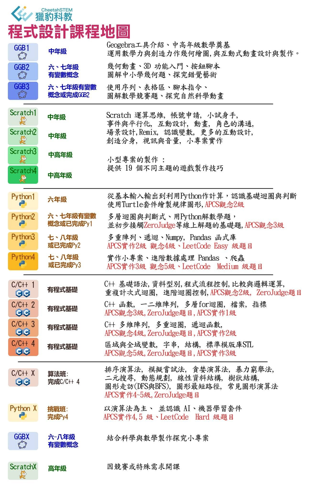

孩子的學習,我們希望從小是少一些知識填鴨,多一些啟發,多一些靈活應用,而程式設計的訓練,便是從操作中…
孩子的學習,我們希望從小是少一些知識填鴨,多一些啟發,多一些靈活應用,而程式設計的訓練,便是從操作中學習和領略,便是把孩子自己的創意具體呈現,便是讓孩子在觀察中找到解題的靈感,奠定日後遇到難題靈活的思維,和受挫的能力!
獵豹程式設計課程,完整學習地圖,跟著老師完整學習!
三月中開始,學期中貼心的隔週課程安排,讓孩子們有充足的時間吸收和熟練
課程時段預告:
C/C++ 2: 星期日下午4:00~6:00(隔週共八次)
星期六的下午 3:45 ~ 5:45(隔週共八次)
GGB1:星期二晚上7:00~9:00(正課+習題課)
Python1:星期日下午1:30~3:30(隔週共六次)
Python3: 星期六早上10:00~12:00(隔週共七次)
